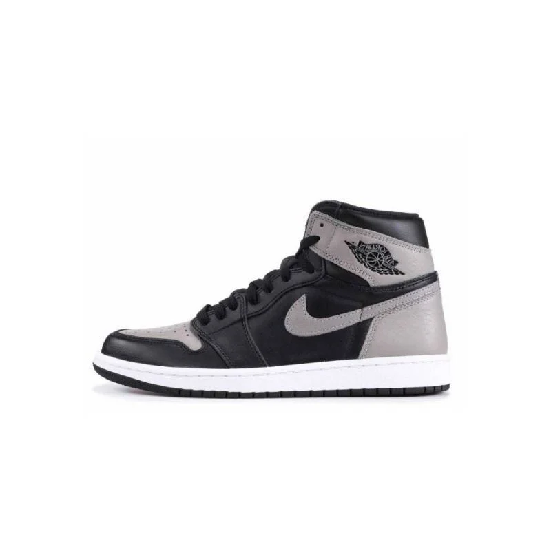
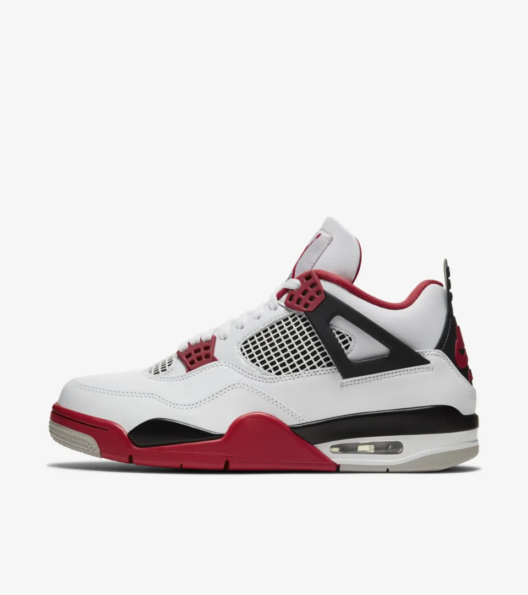

NIKE AIR JORDAN SHOES
La zapatilla Jordan llegó a estar cuando Nike, marca de zapatillas de deporte muy conocida, necesitaba una manera de animar las ventas.Las Jordan originales, fueron producidas para y aprobadas por Michael Jordan. Las Air Jordan I, las primeras de la línea, fueron diseñadas por Peter Moore e introducidas en 1985. La NBA rechazó inicialmente el zapato porque sus colores negro y rojo violaban las reglas de la liga, pero la zapatilla ganó popularidad a pesar de todo.

